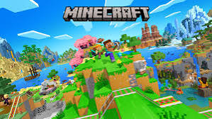
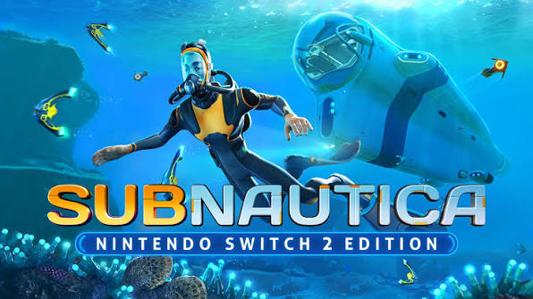
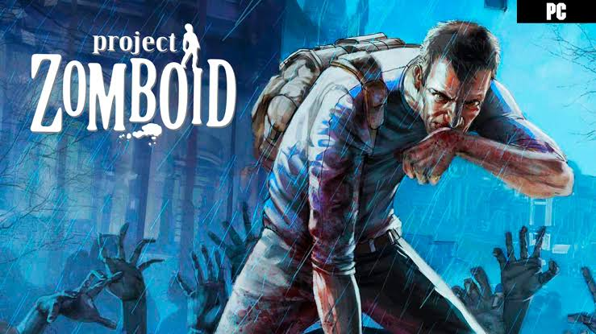
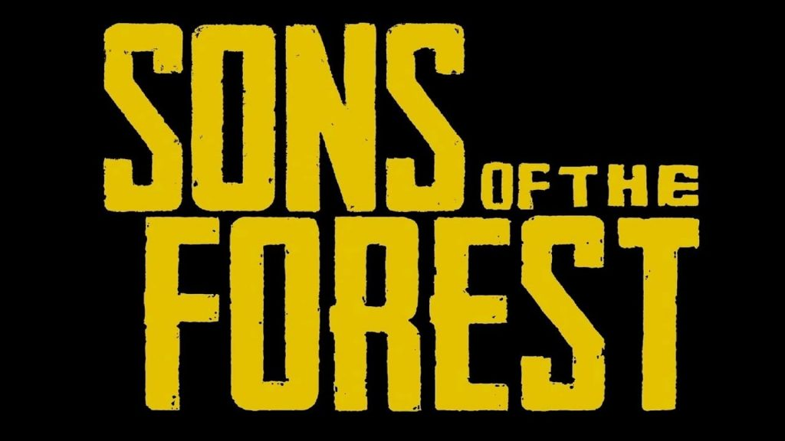

Minecraft

Tipo: Sandbox, construcción y supervivencia clásica.
Por qué destaca: Es el rey indiscutible del género. Recolectas recursos, construyes refugios de día y sobrevives a criaturas hostiles por la noche.
Subnautica

Tipo: Supervivencia y exploración submarina en mundo abierto.
Por qué destaca: Te atrapa en un planeta alienígena cubierto de agua. Debes gestionar el oxígeno, buscar comida y fabricar equipos mientras exploras profundidades llenas de misterio y terror.
Project Zomboid

Tipo: Supervivencia isométrico con zombis.
Por qué destaca: Ofrece un nivel de profundidad y realismo extremo. Cada arañazo importa, las provisiones se acaban y el objetivo no es "ganar", sino ver cuánto tiempo puedes retrasar lo inevitable.
The Forest / Sons of the Forest

Tipo: Supervivencia y terror con caníbales.
XPor qué destaca Tras un accidente aéreo, debes sobrevivir en una península boscosa habitada por una tribu de mutantes y caníbales mientras construyes refugios y descubres la historia del lugar.